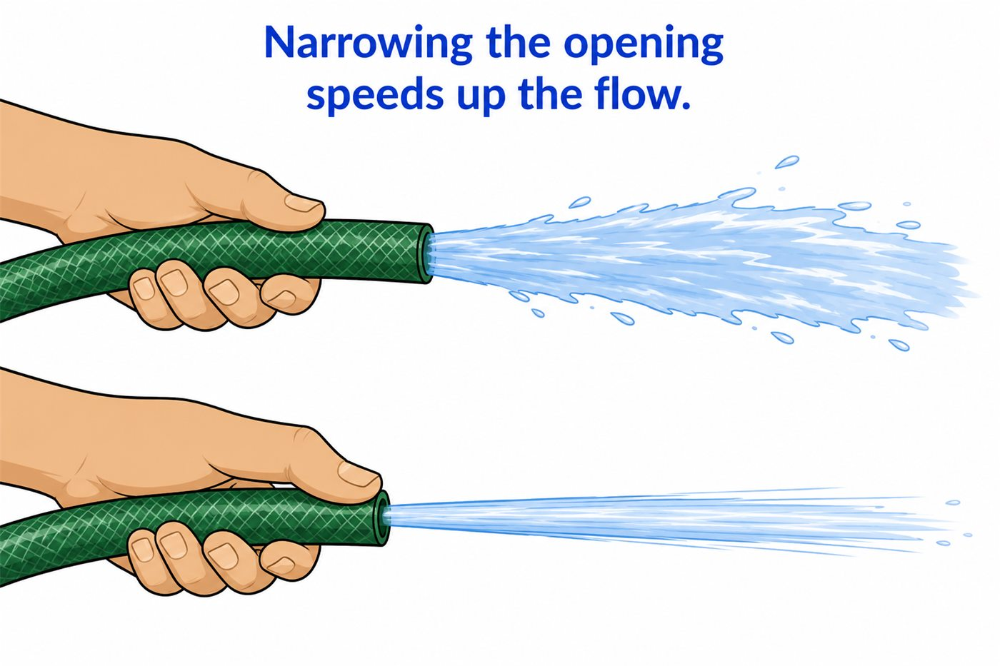
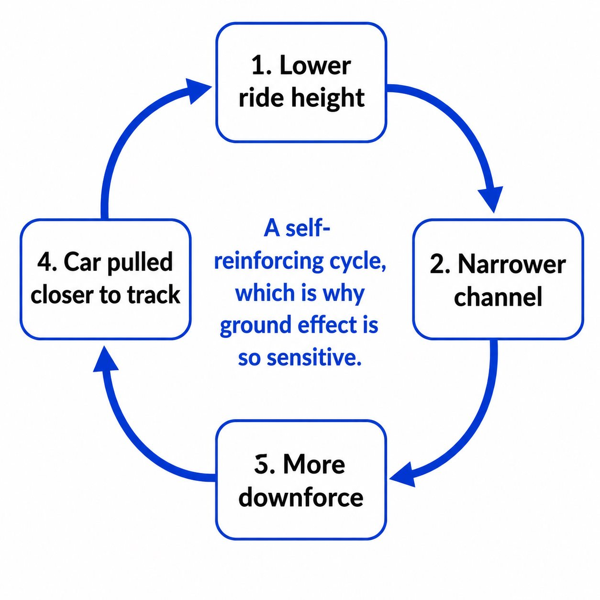
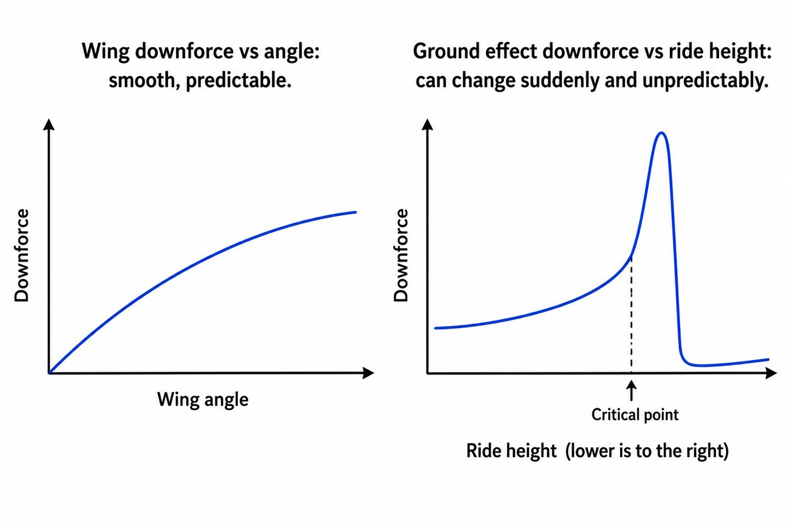

01 - HONEST NOTE
Why this lesson has no playground
Ground effect is powerful, sensitive and difficult to predict honestly with simple formulas.
Real F1 teams use CFD and moving-ground wind tunnels for this problem. So instead of a fake slider, this page gives you the useful mental model: why it works, why it is strong, and why it can suddenly become unstable.
02 - EVERYDAY VENTURI
Narrowing a channel speeds up the flow
If you partly cover a garden hose with your thumb, the water shoots out faster. The same basic idea applies to fluids generally: squeeze the path, speed up the flow, and pressure drops in the narrow region.

03 - UNDER THE CAR
The floor and track become a giant channel
The car's floor and the track surface form a shaped passage for air. When that passage narrows, air accelerates and pressure drops under the car, creating downforce over a huge area.
04 - RIDE HEIGHT
Why the car's height changes everything
Lower ride height narrows the underbody channel. Usually that means more speed and more downforce. But the relationship is not gentle forever: go too low and the flow can separate, causing a sudden loss of load.

05 - OPTIONAL 3D CONTEXT
Explore a full car shape
This model is useful as a visual reference for how the whole body, floor and wheels sit together. It is click-to-load so the lesson stays fast.
Your browser cannot display the interactive model. The diagrams still work normally.
Model credit: Mercedes amg petronas concept by Vipexgamer1, licensed under CC BY 4.0.
06 - WHY HARD
Ground effect does not behave like a simple wing
Wing downforce often changes smoothly within a safe range. Ground effect can change suddenly because small ride-height changes can trigger flow separation and feedback loops.

Downforce builds, pulls the car lower, flow breaks, the car rises, flow reattaches, and the cycle repeats rapidly.
GO DEEPER
Books worth opening
Race Car Aerodynamics - Joseph KatzGround effect and underbody aerodynamics in motorsport context.
Competition Car Aerodynamics - Simon McBeathGround effect history and practical race-car design discussion.
2022 F1 porpoising explainersA very real case study of ground-effect sensitivity.
Finished this lesson? Mark it as complete to track your progress.